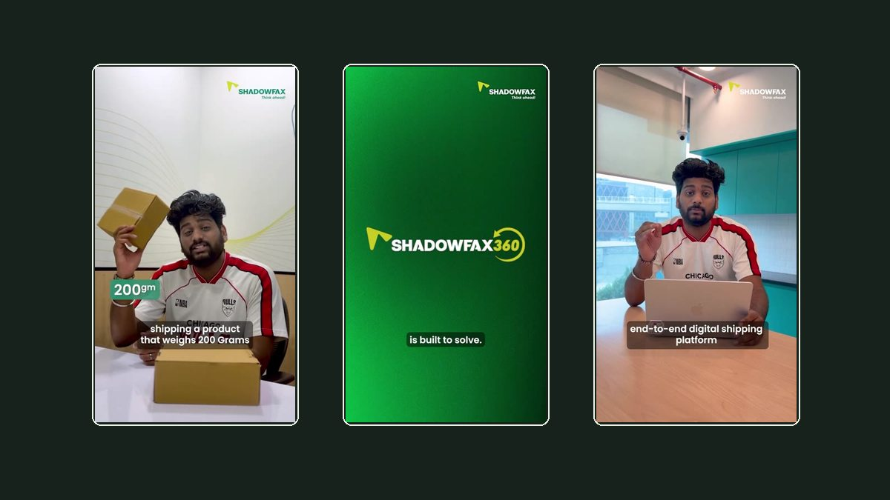
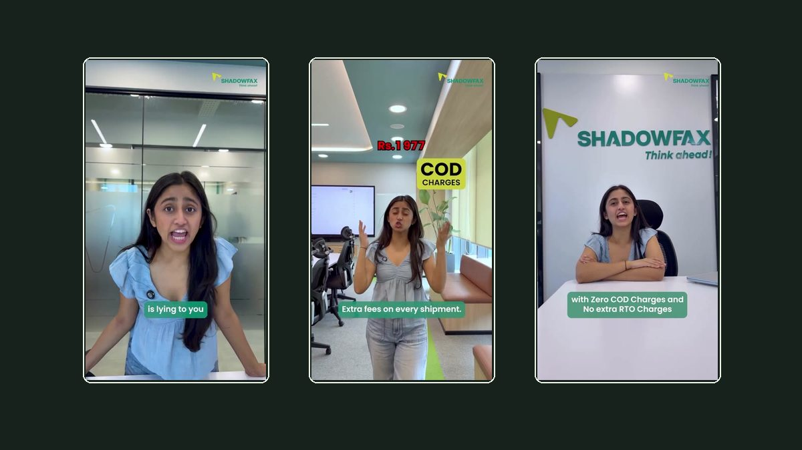
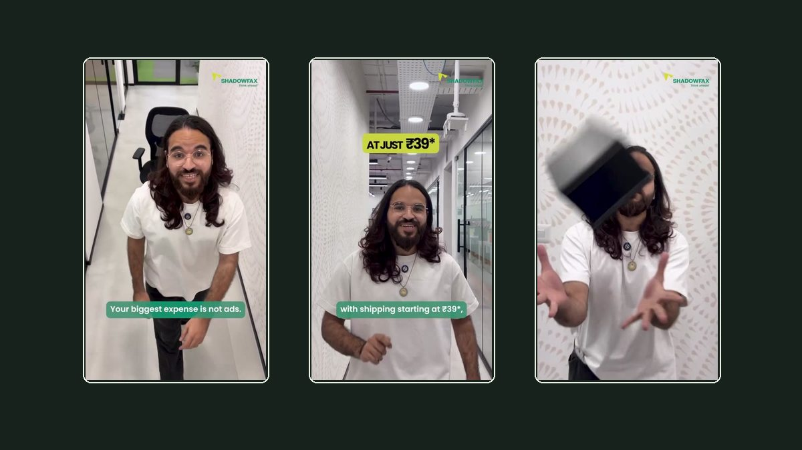
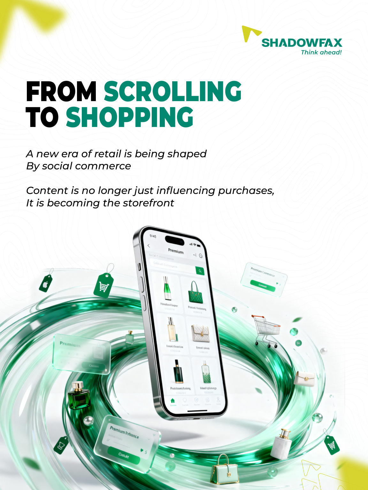
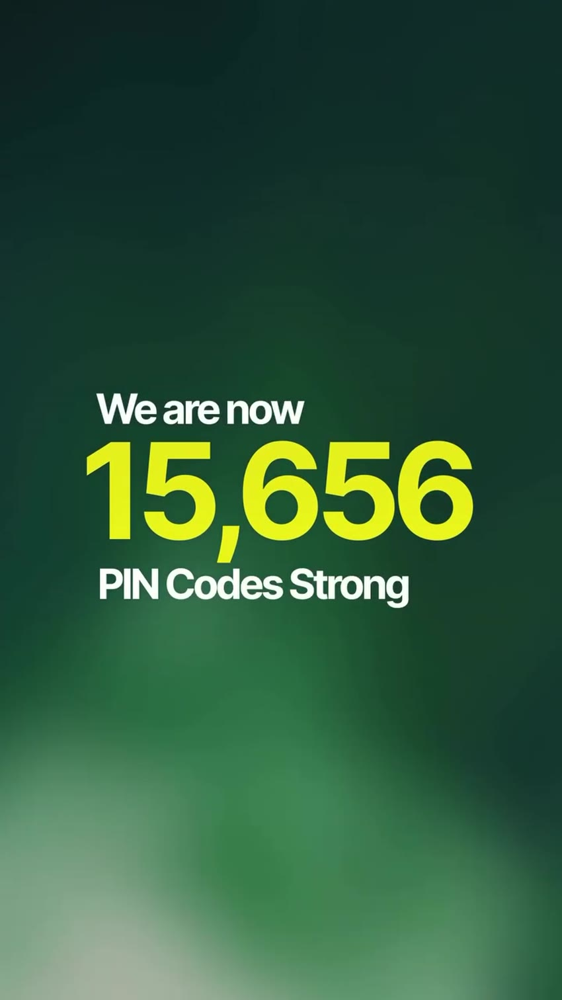
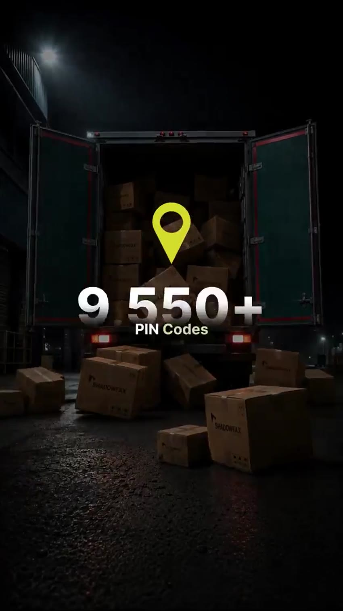
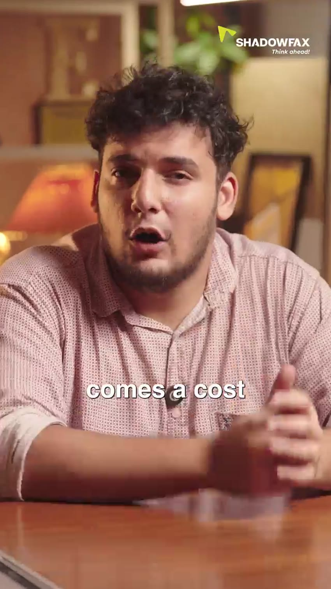

Ideas made visible.
Campaigns, motion and finished products.
MYRIDE
Offline-first motorcycle journal.
View GitHub project ↗
Shadowfax360
Shipping benefits in four clear frames.
View project ↗
Hidden PIN Codes: Sanganer
Sanganer block printing, told as a visual story.
View project ↗Q1 FY27: Quarterly Highlights
Quarterly highlights, structured for quick reading.
View project ↗Delivery Has Many Legends
A 30-second festive delivery race.
View project ↗
When dimensions change the bill
Why parcel dimensions change shipping costs.
Reported performance snapshot
View case study & play video ↗
Your shipping bill is lying to you
RTO, COD and shipping charges explained fast.
Reported performance snapshot
View case study & play video ↗
The cost you pay on every shipment
Recurring shipping costs, made visible.
Reported performance snapshot
View case study & play video ↗
From Scrolling to Shopping
From social discovery to dependable delivery.
View project ↗Black Friday, Delivered
Black Friday logistics in five frames.
View project ↗Inside Shadowfax
A concise introduction to Shadowfax.
View project ↗
Growth Shows Up
Animated reach expansion announcement.
View project ↗
Reach, Frame by Frame
15 seconds of network reach.
View project ↗
The Silence After Checkout
Why post-checkout communication matters.
View project ↗